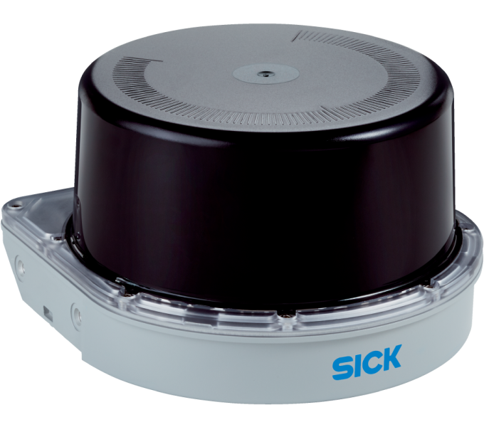

Hardware Philosophy
Designed using affordable, off-the-shelf components to enable scalable and cost-effective deployment.
// HARDWARE_TOPOLOGY
Processing Node
Raspberry Pi 4: Primary host for ROS 2, Tiny-YOLO, and RL agents.
- L298N Motor Driver: PWM-based wheel control.
- Differential Drive Chassis: High-maneuverability mobile base.

Perception Suite
- VL53L0X ToF Sensors: 2-4 units for precision obstacle avoidance.
- MPU-6050 IMU: Tracks orientation for self-correction.
- Wheel Encoders: Odometry feedback for spatial awareness.

Vision Hardware
Pi Camera 2/3: Captures raw feeds for vision-based navigation.
Optional: ESP32-CAM integration for secondary angles.
// CAPABILITIES
Obstacle Avoidance
ToF + IR sensors provide real-time collision detection.
Localization
Wheel encoders + IMU enable accurate odometry tracking.
Vision Processing
Camera enables future object detection and advanced navigation.
// SYSTEM_REDUNDANCY
Proximity Alternatives
Ultrasonic HC-SR04 can be used instead of IR for basic obstacle avoidance.
IR Sensing
Sharp IR Sensors (2 units) provide proximity for wall following.